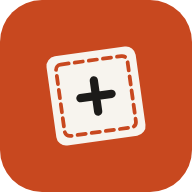
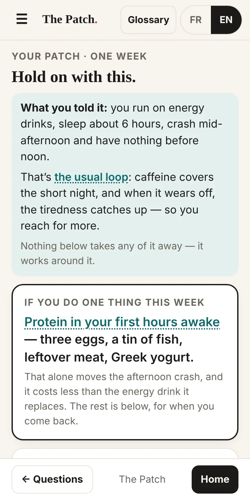
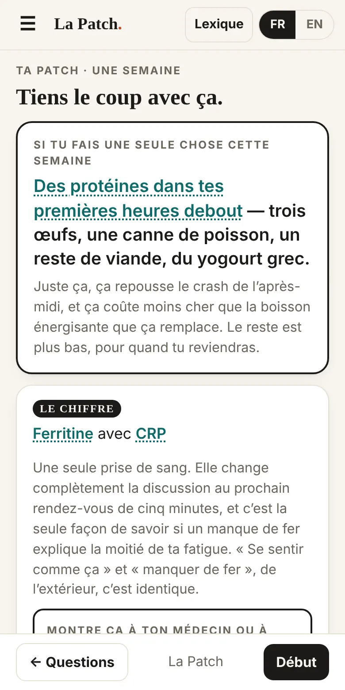
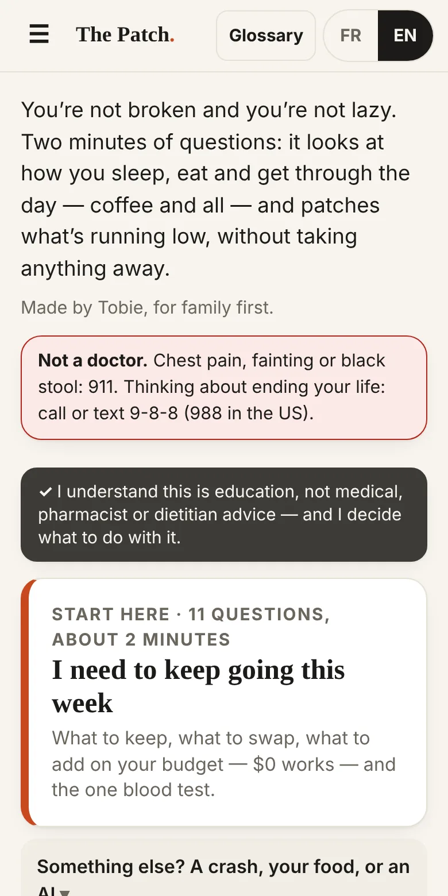
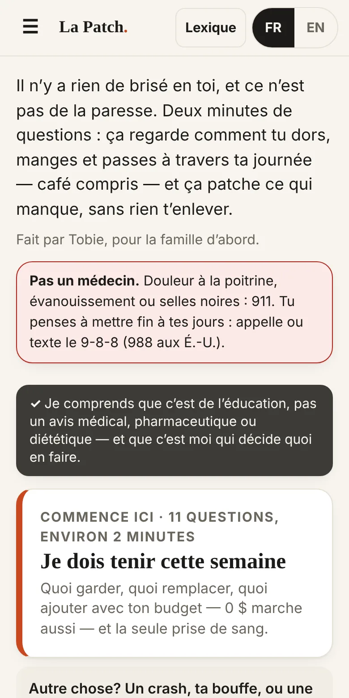
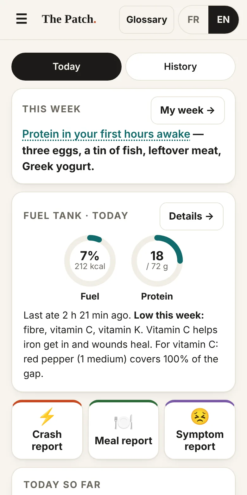
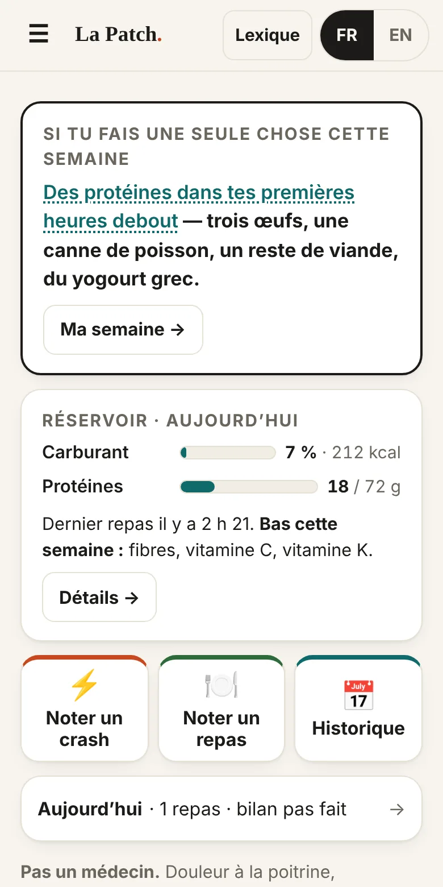

The PatchLa PatchFind the foods that work for you, with everything your body needs. Energy for living, not just surviving.Trouve les aliments qui marchent pour toi, avec tout ce dont ton corps a besoin. De l’énergie pour vivre, pas juste pour survivre.
Tired, crashing, running on coffee or energy drinks? Three minutes of questions, and The Patch shows what’s running low and what to do about it this week — without taking away the things that get you through the day.À plat, des crashs, tu roules au café ou aux boissons énergisantes? Trois minutes de questions, et La Patch montre ce qui manque et quoi faire cette semaine — sans t’enlever ce qui te fait tenir.
No account. No ads. Nothing leaves your phone.Pas de compte. Pas de pub. Rien ne sort de ton téléphone.


15 questions, about 3 minutes, the first time. It says your day back to you, then what to keep, what to swap, what to add on your budget — $0 works — and the one blood test to ask for.15 questions, environ 3 minutes, la première fois. L’app te résume ta journée, puis quoi garder, quoi remplacer, quoi ajouter selon ton budget — 0 $ marche — et la prise de sang à demander.
A few questions about the last few hours — fewer when your meals are logged. The most likely cause, and one move for tomorrow. A symptom — bloating, loose stools, a headache — takes a few seconds, with the time.Quelques questions sur les dernières heures — moins quand tes repas sont notés. La cause la plus probable, et un geste pour demain. Un symptôme — ballonnements, selles molles, mal de tête — se note en quelques secondes, avec l’heure.
Tap what you ate, with the time. The gauge shows today’s fuel and protein, and what’s low this week against Health Canada’s needs — pills and energy drinks included. Nothing logged yet? One minute on a normal day fills it. Got bloodwork? Type it in, and the tank shows where your stores are and whether they’re holding.Appuie sur ce que tu as mangé, avec l’heure. La jauge montre le carburant et les protéines du jour, et ce qui est bas cette semaine selon les besoins de Santé Canada — pilules et boissons énergisantes comprises. Rien de noté encore? Une minute sur une journée normale la remplit. Tu as une prise de sang? Entre les résultats, et le réservoir montre où en sont tes réserves et si elles tiennent.
Everything you answered, ready to paste into any AI chat, with rules that keep it honest. Nothing to explain from scratch.Tout ce que tu as répondu, prêt à coller dans n’importe quel chat d’IA, avec des règles qui le gardent honnête. Rien à réexpliquer.




Every day after that: your meals and symptoms with the time, and a 15-second check-in — energy, sleep, caffeine, alcohol. After two or three weeks it starts showing what comes before your crashes, and you can test one suspect for two weeks.Ensuite, chaque jour : tes repas et tes symptômes avec l’heure, et un bilan de 15 secondes — énergie, sommeil, caféine, alcool. Après deux ou trois semaines, l’app commence à montrer ce qui vient avant tes crashs, et tu peux tester un suspect pendant deux semaines.
There’s no account and no server. Your answers live only in this phone’s browser storage, and the app makes no outside requests — no tracking, no analytics. Once installed, it works offline.Il n’y a pas de compte ni de serveur. Tes réponses restent seulement dans la mémoire du navigateur de ce téléphone, et l’app ne fait aucune requête vers l’extérieur — pas de pistage, pas de statistiques. Une fois installée, elle marche hors ligne.
The flip side: if you clear your browser data, it’s gone — and on iPhone, Safari can also erase it if a week of using Safari goes by without you opening the app, unless it’s on your Home Screen. The menu has a backup — a file or a block of text you keep. Make one after your first week.Le revers : si tu effaces les données du navigateur, tout part — et sur iPhone, Safari peut aussi l’effacer si une semaine d’utilisation passe sans que tu ouvres l’app, sauf si elle est sur ton écran d’accueil. Le menu a une sauvegarde — un fichier ou un bloc de texte que tu gardes. Fais-en une après ta première semaine.
Every underlined word opens what it means, how sure we are, and the sources — Health Canada’s nutrient tables, the Canadian Nutrient File, guidelines and trials.Chaque mot souligné ouvre ce qu’il veut dire, à quel point on est sûr, et les sources — les tables de Santé Canada, le Fichier canadien sur les éléments nutritifs, des guides et des essais.
Solid evidencePreuves solidesLikelyProbableWorth a tryÇa vaut l’essaiOur reasoningNotre raisonnement
Harm reduction, not abstinence: what you keep stays on the list. The app works around it.Réduction des méfaits, pas abstinence : ce que tu gardes reste sur la liste. L’app s’adapte autour.
It installs from the browser — no app store. It gets its own icon, opens full screen, and works offline.Elle s’installe à partir du navigateur — pas de magasin d’applis. Elle a sa propre icône, s’ouvre en plein écran et marche hors ligne.
Already using it somewhere else? In the old copy, open the menu ☰ → Back up my data. In the installed app, menu → Restore from a backup, and paste or pick it.Tu l’utilises déjà ailleurs? Dans l’ancienne copie, ouvre le menu ☰ → Sauvegarder mes données. Dans l’app installée, menu → Restaurer une sauvegarde, et colle-la ou choisis-la.